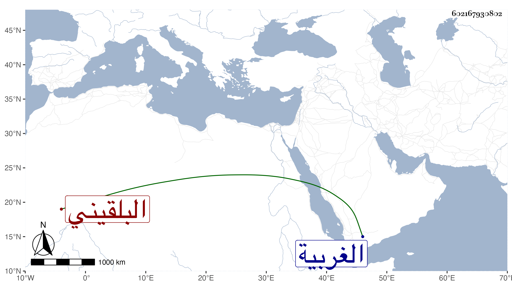

0902Sakhawi.DawLamic.ITO20230111-ara1.EIS1600.602167930802
Biography ID: 602167930802
البلقيني بضم أوله نسبة لبلقينة من الغربية السراج عمر وناصر الدين محمد وأبو بكر وهو من ذلك القرن بنو رسلان بن نصير ولهم أخت عاشت إلى سنة ثلاث وثمانمائة جازت التسعين فللأول البدر محمد وهو من ذاك القرن وعلى أن ثبت والجلال عبد الرحمن والعلم صالح والضياء عبد الخالق وللثاني وللثالث بهاء الدين أبو الفتح رسلان أول إخوته وفاة وجعفر وناصر الدين محمد والشهاب أحمد العجيمي قاضي المحلة فناصر الدين هو والد الشهاب أحمد إمام المالكية والعجيمي هو والد أوحد الدين محمد وأم شهاب الدين أحمد وبدر الدين محمد ابني فتح الدين محمد الأبشيهي واختها الأخرى أم قاسم بن الشرف محمد بن قاسم المالكي ثم إن لأوحد الدين البدر أبو السعادات محمد ثم إن للبدر محمد بن السراج بلقيس وجنة وصالحة وتقي الدين محمد فبلقيس تزوجها البهاء البرجي وجنة تزوجها النور المناوي والد البدر محمد ثم السراج الحمصي والد حواء وصالحة تزوجها بن البهاء بن البرجي الملقب بعيزق واستولدها أوحد الدين محمد وتقي الدين هو والد ولي الدين أحمد وفتح الدين محمد وخديجة وأم الحسن وكذا للجلال عبد الرحمن بن السراج تاج الدين محمد وأبو العدل قاسم وفاطمة وعزيزة وزينب فللتاج العلاء علي والشهاب أحمد والبدر أبو السعادات محمد فلعلي الجلال عبد الرحمن والكمال محمد وناجية و ... وللشهاب البدر محمد وعزيزة فللبدر عبد الباسط ولعزيزة ابن أبي الرداد المصري ولعزيزة ابنة الجلال الصدر محمد وعائشة وكذا للقاضي علم الدين صالح بن السراج أبو البقاء محمد وفتح الدين أبو الفتح محمد وفاطمة وستيتة وألف وليس لأحد نسل سوى الأخيرة فلها تقي الدين عبد الكافي بن عبد القادر بن الرسام وست الخلفاء ابنة أمير المؤمنين ولتقي الدين عبد الكافي أحمد أمه ابنة عبد الرحيم بن الجيعان ومحمد أمه أمة عقد له على ابنة للبدر أخي البرهان الحموي وابنة أخرى أمها شامية أو حموية وانقرضوا كلهم وكذا من قبلهم إلا ألف ولرسلان الأعلى أخ اسمه مظفر له ابنان صالح ومحمد فصالح أبو زينب أم العلم صالح وعبد الخالق ومحمد أبو عز الدين عبد العزيز ولعز الدين بهاء الدين محمد ولبهاء الدين عز الدين عبد العزيز وله بدر الدين محمد وابنة متزوجة بالبدر محمد بن البهاء محمد بن أبي بكر المشهدي .
